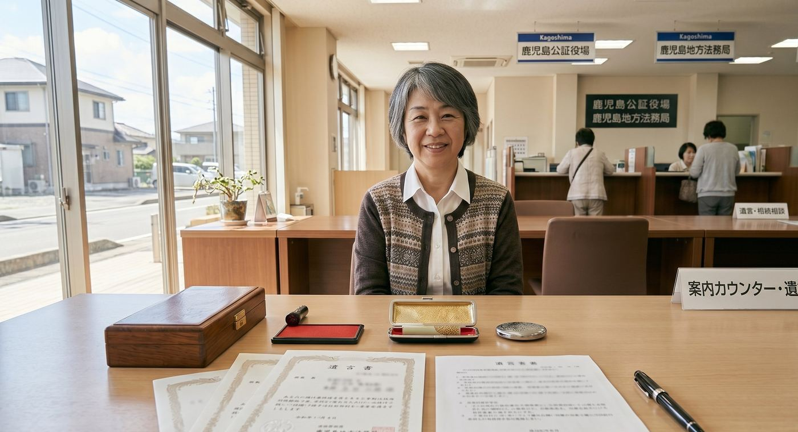

相続には期限があるものも多く、早めの対応が重要です
親が亡くなり、鹿児島の実家を相続することになった。「何から手をつければいいのかわからない」という方は多いはずです。この記事では、相続発生後にやるべきことを時系列で整理し、特に空き家になりやすい実家の扱いについてわかりやすく解説します。
相続発生後のスケジュール
| 時期の目安 | やるべきこと |
|---|---|
| 7日以内 | 死亡届の提出（市区町村役場） |
| 3ヶ月以内 | 相続放棄・限定承認の検討（判断が必要な場合） |
| 4ヶ月以内 | 所得税の準確定申告（必要な場合） |
| 10ヶ月以内 | 相続税申告・納税（課税対象の場合） |
| 3年以内 | 相続登記（2024年4月より義務化） |
ステップ1：相続人と遺産を確認する
まず、誰が相続人になるのかを確認します。被相続人（亡くなった方）の戸籍を取り寄せて、相続人全員を把握しましょう。鹿児島市の場合は鹿児島市役所で取得できます。
次に相続財産（不動産・預貯金・負債など）の全体像を把握します。不動産については固定資産税の課税明細書を確認すると所有している物件を調べやすいです。
ステップ2：相続方法を決める
相続には3つの方法があります。
- 単純承認：プラスもマイナスも全部相続する（最も一般的）
- 相続放棄：一切の相続権を放棄する（借金が多い場合など）。3ヶ月以内に家庭裁判所に申請
- 限定承認：プラスの財産の範囲内でマイナスを引き継ぐ（手続きが複雑）
空き家の場合、マイナスの財産（借金・ローン）がなければ基本的に単純承認で問題ありません。ただし、物件に多額のリフォーム費用がかかる・固定資産税が滞納されているなどの場合は注意が必要です。
ステップ3：遺産分割協議をする
相続人が複数いる場合は、誰が何を相続するかを話し合う「遺産分割協議」が必要です。全員の合意ができたら遺産分割協議書を作成します。
不動産（実家）の分割方法は主に4種類あります：
- 現物分割：特定の相続人が不動産を取得する
- 代償分割：不動産を取得した相続人が、他の相続人に現金を支払う
- 換価分割：不動産を売却して現金を分割する（よく使われる方法）
- 共有：複数の相続人が共有名義で持つ（後でトラブルになりやすい）

ステップ4：相続登記をする
遺産分割協議が完了したら、法務局で相続登記（名義変更）を行います。2024年4月から義務化されましたので、忘れずに手続きしましょう。自分でもできますが、司法書士に依頼するのが一般的です。費用は登録免許税（固定資産評価額×0.4%）＋司法書士報酬（5〜10万円程度）が目安です。
ステップ5：空き家をどうするか決める
相続登記が完了したら、次は実家をどう扱うか決める段階です。主な選択肢は：
- 売却：まとまった現金が入り、維持費から解放される
- 賃貸活用：毎月の収入を得ながら資産を保有できる
- 管理委託：判断を先延ばしにしながらも建物を維持できる
- 解体：老朽化が進んでいる場合は解体して更地にする
どれが最適かは物件の状態・立地・相続人の状況によって異なります。TAMARIEでは売却・活用・管理すべてに対応しており、無料相談で最適な選択肢をご提案します。